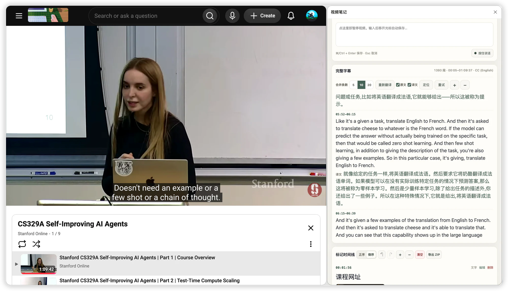

安装到 Edge / Chrome
优先从 Edge 商店安装；在 Chrome 使用或提前试用时，可下载 ZIP 并加载解压后的目录。
Edge / Chrome · 字幕阅读、翻译与笔记
视频笔记把 YouTube 和哔哩哔哩课程的字幕阅读、浏览器本地翻译、时点笔记、截图与语音放到视频旁。看到重点当场记，看完导出 Markdown 继续整理。

怎样使用
字幕、译文与笔记一直留在视频旁。看懂、记录、回看和导出不必来回切换窗口。
优先从 Edge 商店安装；在 Chrome 使用或提前试用时，可下载 ZIP 并加载解压后的目录。
进入 YouTube 或哔哩哔哩课程，点击工具栏中的“视频笔记”；YouTube 有可用字幕轨时还能读取完整字幕。
自动识别字幕语言，用浏览器本地语言包翻译完整段落，并切换原文、译文或双语对照。
输入时视频暂停、保存后续播；笔记可带时点、字幕、译文、截图或语音，最后导出 Markdown ZIP。
浏览器本地翻译
扩展使用 Edge / Chrome 内置 Translator API，字幕内容不会发送给开发者或第三方翻译服务。源语言自动识别，目标语言可选简体中文、英语、日语、韩语或西班牙语。
当前功能
YouTube 完整字幕可按完整句合并阅读、点击时间跳转、定位当前播放段落并调整字号；字幕列表和阅读位置会在本机恢复。
时点、按完整句整理的标记前字幕、匹配的本地译文、播放器截图和原始语音都能跟着笔记保存；语音还可用 Whisper 在本机转写。
正序或倒序查看，编辑、删除、清空、撤销与反撤销；调整侧栏和笔记字号后，一键导出 Markdown、图片与原始录音。